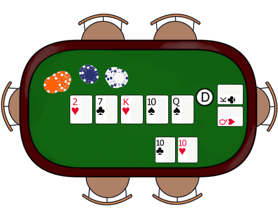

Texas Hold´em
´Introducción
El Texas Hold'em es la variante de poker más practicada en todo el mundo. Se juega en la mayoría de casinos presenciale sí, incluso en España y en todas las salas de poker online.
En el juego hay cuatro rondas de apuestas, la cantidad que se juega en las dos primeras rondas es la mitad que la de las dos siguientes. Así, en una mesa de $1/$2, se apuesta $1 en las dos primeras rondas y $2 en las dos siguientes. En cada una de estas rondas de apuestas el máximo número de subidas es de cuatro. Es decir, una vez un jugador abre con una apuesta inicial, sus oponentes pueden subir hasta tres veces más, siempre en las cantidades que marca la mesa.
Empieza la partida
En primer lugar, están las ciegas. Las ciegas son dos apuestas obligatorias, la ciega pequeña y la ciega grande, que en cada ronda del juego deben emplazar los dos jugadores que quedan a la izquierda del repartidor (dealer en inglés). El primer jugador a su izquierda debe poner la ciega pequeña, y el jugador a la izquierda de éste, la ciega grande. El coste de la ciega pequeña es la mitad de la apuesta pequeña; medio dólar en una mesa de $1/$2. La ciega grande cuesta el equivalente de la apuesta pequeña; en nuestro ejemplo, $1.
Tras emplazar las ciegas, el repartidor da a cada jugador 2 cartas boca abajo. A lo largo de la mano, se colocarán cinco cartas más boca arriba en el centro de la mesa, las llamadas "cartas comunitarias", compartidas por todos los jugadores. Al término, cada jugador formará su jugada usando la mejor combinación entre sus dos cartas y las cinco comunitarias; así, para crear la mejor jugada, el jugador podrá usar una de sus dos cartas de mano, las dos, o ninguna.
Flop
Los jugadores que continúan en el juego, ven entonces el "Flop", que son las primeras tres cartas comunitarias de las cinco de que va a constar la mano. Se reparten las tres cartas del Flop y empieza otra ronda de apuestas
A continuación, hay otra ronda de apuestas. Esta vez empieza hablando el jugador que está sentado inmediatamente a la izquierda del repartidor. Puede escoger entre pasar (check) o apostar (bet). Si el jugador pasa, se reserva el derecho a igualar o superar cualquier apuesta que se haga detrás de él cuando le vuelva a tocar el turno. Si apuesta, debe aportar una apuesta pequeña al bote. El turno de apuestas continúa de la misma forma que en la ronda anterior, finalizando ahora en el jugador que hace de repartidor.
Cuarta y quinta carta
Los jugadores que siguen en la mano ven la cuarta carta, que en inglés se llama "The Turn" o "Fourth Street". El turno de apuestas que se sigue funciona de la misma forma que el Flop, con la diferencia de que ahora las apuestas son del doble de valor. En una mesa de $1/$2, las apuestas después de ver la cuarta carta son de $2.
Los jugadores que siguen en la mano ven la quinta y última carta, que en inglés se llama "The River" o "Fifth Street", y sigue un turno de apuestas idéntico al anterior. Al finalizar este turno, los jugadores que permanecen en la mano deben comparar sus jugadas y se lleva el bote aquel cuya combinación de cartas sea superior.
Fin de la partida
Para formar su mano, cada jugador emplea la mejor combinación entre sus dos cartas y las cinco de la mesa. Por lo tanto, un jugador puede emplear una carta de mano, dos o ninguna.
En la imagen, gana el jugador que empezó en la ciega pequeña, con trio de dieces. El dealer pierde con doble pareja de reyes y reinas.